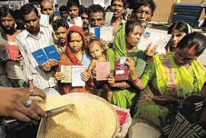
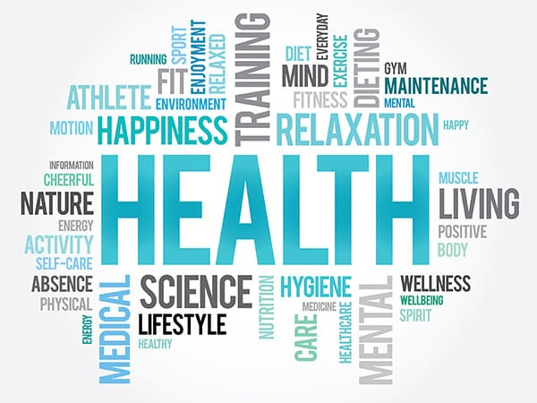
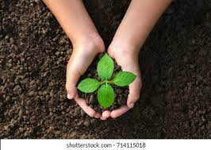
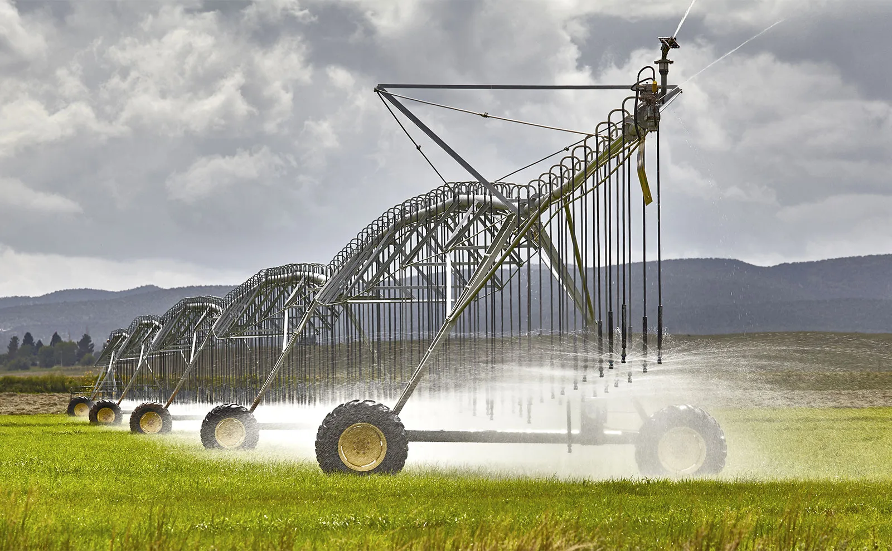
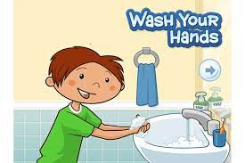

SWATCH BHARATH
Swachh Bharat Abhiyan is a national campaign by the Government of India, covering 4,041 statutory cities and towns, to clean the streets, roads and infrastructure of the country.The campaign was officially launched on 2 October 2014 at Rajghat, New Delhi, where Prime Minister Narendra Modihimself cleaned the road. Modi said that the best memorial to Mahatma Gandhi would be to achieve a "Clean India" by 2019, his 150th birth anniversary. It is India's biggest ever cleanliness drive and 3 million government employees and school and college students of India participated in this event.The mission was started by Prime Minister Modi, who nominated nine famous personalities for the campaign, and they took up the challenge and nominated nine more people and so on. It has been carried forward since then with people from all walks of life joining it.This campaign aims to accomplish the vision of a 'Clean India' by 2 October 2019, the 150th birthday of Mahatma Gandhi.

PUBLIC DISTRIBUTION SYSTEM
PDS is operated under the joint responsibility of the Central and the State/UT Governments. The Central Government, through Food Corporation of India (FCI), has assumed the responsibility for procurement, storage, transportation and bulk allocation of food grains to the State Governments. The operational responsibility including allocation within State, identification of eligible families, issue of Ration Cards and supervision of the functioning of Fair Price Shops (FPSs) etc., rest with the State Governments. Under the PDS, presently the commodities namely wheat, rice, sugar and kerosene are being allocated to the States/UTs for distribution. Some States/UTs also distribute additional items of mass consumption through the PDS outlets such as pulses, edible oils, iodized salt, spices..etc
HEALTH AND HYGIENE
Hygiene refers to good practices and rituals that prevent diseases and leads to good health.Thus it mainly includes proper sewage disposal,cleanliness and safe drinking water supply.So it includes the activities that are done for preserving and improving as well ass maintaining good health.Good persornal hygiene is one of the best way to protect yourself from getting gastro or infections diseases such as covid-19,coids and flu.so,health depends on hygiene. It is well known that health and hygiene are closely related. Personal hygiene is essential for several reasons like personal well-being, social health, psychological health and simply as a way of life. Keeping good hygiene, not only safeguards those around you from suffering illnesses, but also helps to prevent the spread of infections, illnesses, and bad odors.
TREE PLANTATION
Tree planting is the process in which tree seedlings are transplanted generally for forestry, land reclamation, or landscaping purposes. Tree plantation is very necessary because trees provide oxygen to the environment and make the air quality better. If more trees are planted, then the world's environment will become a safer place to live in. Tree plantation also reduces pollution, thus making the life of future generations secure. Through this tree plantation essay, one will have a clear overview of this topic. The tree is the key to a pollution-free environment for a long time because they are responsible for providing oxygen, improving the quality of air, climate amelioration, conserving water, soil preservation, and supporting wildlife. Due to all these reasons, tree plantation has become necessary in the present scenario as pollution is at a peak. Tree plantation is the only way to control pollution to some extent.
IRRIGATION SYSTEM
Irrigation (also referred to as watering) is the practice of applying controlled amounts of water to land to help grow crops, landscape plants, and lawns. Irrigation has been a key aspect of agriculture for over 5,000 years and has been developed by many cultures around the world. Irrigation helps to grow crops, maintain landscapes, and revegetate disturbed soils in dry areas and during times of below-average rainfall. In addition to these uses, irrigation is also employed to protect crops from frost,suppress weed growth in grain fields, and prevent soil consolidation. It is also used to cool livestock, reduce dust, dispose of sewage, and support mining operations. Drainage, which involves the removal of surface and sub-surface water from a given location, is often studied in conjunction with irrigation.There are several methods of irrigation that differ in how water is supplied to plants. Surface irrigation, also known as gravity irrigation, is the oldest form of irrigation and has been in use for thousands of years.
HAND'S HYGIENE
Keeping hands clean is one of the most important steps we can take to avoid getting sick and spreading germs to others. Many diseases and conditions are spread by not washing hands with soap and clean, running water.Preventing sickness reduces the amount of antibiotics people use and the likelihood that antibiotic resistance will develop. Handwashing can prevent about 30% of diarrhea-related sicknesses and about 20% of respiratory infections (e.g., colds) 2, 5. Antibiotics often are prescribed unnecessarily for these health issues 14. Reducing the number of these infections by washing hands frequently helps prevent the overuse of antibiotics—the single most important factor leading to antibiotic resistance around the world. Handwashing can also prevent people from getting sick with germs that are already resistant to antibiotics and that can be difficult to treat.
